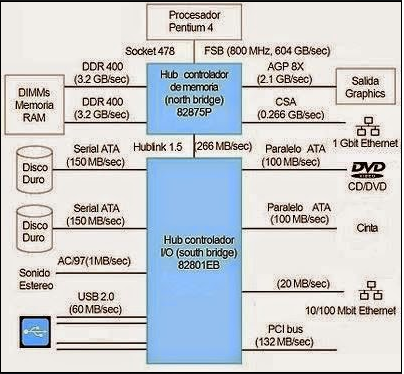
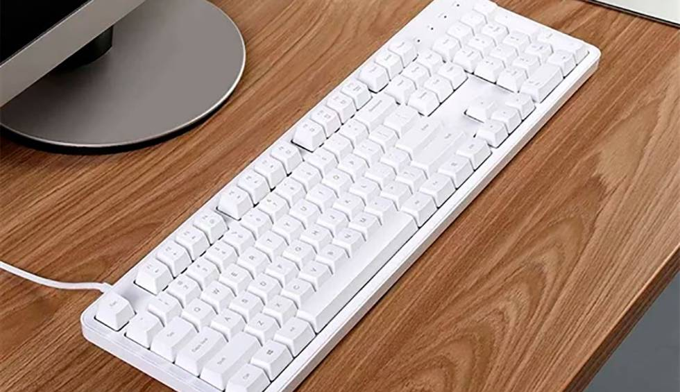
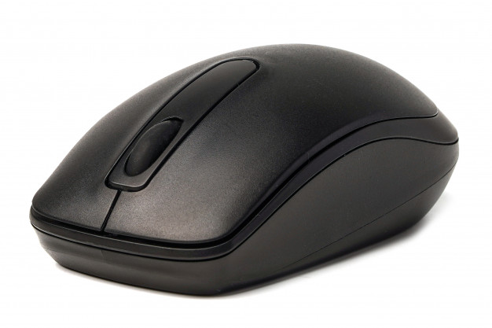
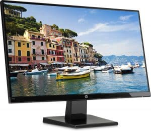
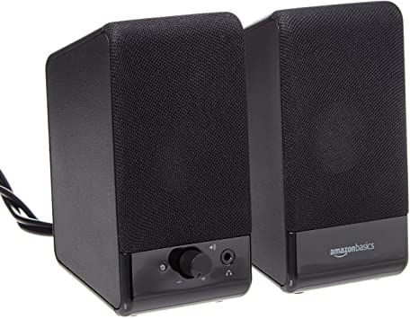
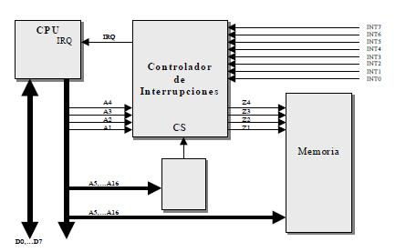
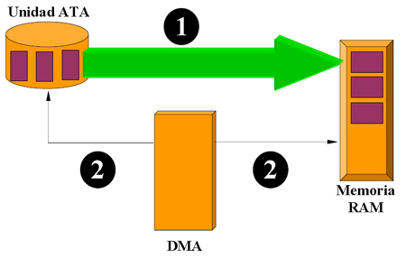
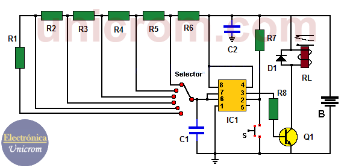
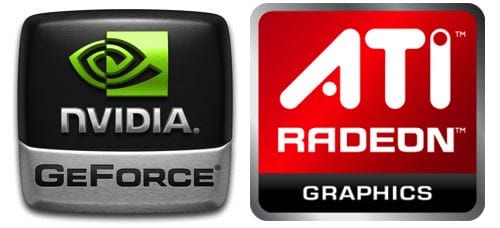

Seleccion de componentes para ensamblaje de equipo de computoUndidad Central de procesamientoUn chipset (traducido como circuito integrado auxiliar) es el conjunto de circuitos integrados diseñados con base en la arquitectura de un procesador (en algunos casos, diseñados como parte integral de esa arquitectura), permitiendo que ese tipo de procesadores funcionen en una placa base. Sirven de puente de comunicación con el resto de componentes de la placa, como son la memoria, las tarjetas de expansión, los puertos USB, ratón, teclado, etc. Las placas base modernas suelen incluir dos integrados, denominados puente norte y puente sur, y suelen ser los circuitos integrados más grandes después de la GPU y el microprocesador. Las últimas placa base carecen de puente norte, ya que los procesadores de última generación lo llevan integrado. El chipset determina muchas de las características de una placa base y por lo general la referencia de la misma está relacionada con la del chipset.A diferencia del microcontrolador, el procesador no tiene mayor funcionalidad sin el soporte de un chipset: la importancia del mismo ha sido relegada a un segundo plano por las estrategias de mercadotecnia. El Chipset es el que hace posible que la placa base funcione como eje del sistema, dando soporte a varios componentes e interconectándolos de forma que se comuniquen entre ellos haciendo uso de diversos buses. Es uno de los pocos elementos que tiene conexión directa con el procesador, gestiona la mayor parte de la información que entra y sale por el bus principal del procesador, del sistema de vídeo y muchas veces de la memoria RAM. En el caso de los computadores PC, es un esquema de arquitectura abierta que establece modularidad: el Chipset debe tener interfaces estándar para los demás dispositivos. Esto permite escoger entre varios dispositivos estándar, por ejemplo en el caso de los buses de expansión, algunas tarjetas madre pueden tener bus PCI-Express y soportar diversos tipos de tarjetas de distintos anchos de bus (1x, 8x, 16x). En el caso de equipos portátiles o de marca, el chipset puede ser diseñado a la medida y aunque no soporte gran variedad de tecnologías, presentará alguna interfaz de dispositivo.

En la actualidad los principales fabricantes de chipsets son AMD, ATI Technologies (comprada en 2006 por AMD), Intel, NVIDIA, Silicon Integrated Systems y VIA Technologies. La unidad central de procesamiento o CPU (por el acrónimo en inglés de Central Processing Unit), o simplemente el procesador o microprocesador, es el componente del computador y otros dispositivos programables, que interpreta las instrucciones contenidas en los programas y procesa los datos. Los CPU proporcionan la característica fundamental de la computadora digital (la programabilidad) y son uno de los componentes necesarios encontrados en las computadoras de cualquier tiempo, junto con el almacenamiento primario y los dispositivos de entrada/salida. Se conoce como microprocesador el CPU que es manufacturado con circuitos integrados. Desde mediados de los años 1970, los microprocesadores de un solo chip han reemplazado casi totalmente todos los tipos de CPU, y hoy en día, el término "CPU" es aplicado usualmente a todos los microprocesadores. Controldador BusEl Bus es la vía a través de la que se van a transmitir y recibir todas las comunicaciones, tanto internas como externas, del sistema informático. El bus es solamente un Dispositivo de Transferencia de Información entre los componentes conectados a él, no almacena información alguna en ningún momento. Los datos, en forma de señal eléctrica, sólo permanecen en el bus el tiempo que necesitan en recorrer la distancia entre los dos componentes implicados en la transferencia. En una unidad central de Bus de sistema típica el bus se subdivide en tres buses o grupos de líneas: Bus de Control, Bus de Datos, Bus de Direcciones. Bus de DireccionesEs un canal de comunicaciones constituido por líneas que apuntan a la dirección de memoria que ocupa o va a ocupar la información a tratar. Una vez direccionada la posición, la información, almacenada en la memoria hasta ese momento, pasará a la CPU a través del bus de datos. Para determinar la cantidad de memoria directamente accesible por la CPU, hay que tener en cuenta el número de líneas que integran el bus de direcciones, ya que cuanto mayor sea el número de líneas, mayor será la cantidad de direcciones y, por tanto, de memoria a manejar por el sistema informático. Bus de DatosEl bus de datos es el medio por el que se transmite la instrucción o dato apuntado por el bus de direcciones. Es usado para realizar el intercambio de instrucciones y datos tanto internamente, entre los diferentes componentes del sistema informático, como externamente, entre el sistema informático y los diferentes subsistemas periféricos que se encuentran en el exterior, una de las características principales de una computadora es el número de bits que puede transferir el bus de datos (16, 32, 64, etc.). Cuanto mayor sea este número, mayor será la cantidad de información que se puede manejar al mismo tiempo. Bus de ControlEs un número variable de líneas a través de las que se controlan las unidades complementarías. El número de líneas de control dependerá directamente de la cantidad que pueda soportar el tipo de CPU utilizada y de su capacidad de direccionamiento de información. Puertas de Entrada Salida E/S.En computación, entrada/salida, también abreviado E/S o I/O (del original en inglés input/output), es la colección de interfaces que usan las distintas unidades funcionales (subsistemas) de un sistema de procesamiento de información para comunicarse unas con otras, o las señales (información) enviadas a través de esas interfaces. Las entradas son las señales recibidas por la unidad, mientras que las salidas son las señales enviadas por ésta. El término puede ser usado para describir una acción; "realizar una entrada/salida" se refiere a ejecutar una operación de entrada o de salida. Los dispositivos de E/S los usa una persona u otro sistema para comunicarse con una computadora. De hecho, a los teclados y ratones se los considera dispositivos de entrada de una computadora, mientras que los monitores e impresoras son vistos como dispositivos de salida de una computadora. Los dispositivos típicos para la comunicación entre computadoras realizan las dos operaciones, tanto entrada como salida, y entre otros se encuentran los módems y tarjetas de red. Es importante notar que la designación de un dispositivo, sea de entrada o de salida, cambia al cambiar la perspectiva desde el que se lo ve. Los teclados y ratones toman como entrada el movimiento físico que el usuario produce como salida y lo convierten a una señal eléctrica que la computadora pueda entender. La salida de estos dispositivos son una entrada para la computadora. De manera análoga, los monitores e impresoras toman como entrada las señales que la computadora produce como salida. Luego, convierten esas señales en representaciones inteligibles que puedan ser interpretadas por el usuario. La interpretación será, por ejemplo, por medio de la vista, que funciona como entrada. En arquitectura de computadoras, a la combinación de una unidad central de procesamiento (CPU) y memoria principal (aquella que la CPU puede escribir o leer directamente mediante instrucciones individuales) se la considera el corazón de la computadora y cualquier movimiento de información desde o hacia ese conjunto se lo considera entrada/salida. La CPU y su circuitería complementaria proveen métodos de entrada/salida que se usan en programación de bajo nivel para la implementación de controladores de dispositivos. Los sistemas operativos y lenguajes de programación de más alto nivel brindan conceptos y primitivas de entrada/salida distintos y más abstractos. Por ejemplo, un sistema operativo brinda aplicativos que manejan el concepto de archivos. El lenguaje de programación C define funciones que les permiten a sus programas realizar E/S a través de streams, es decir, les permiten leer datos desde y escribir datos hacia sus programas. Una alternativa para las funciones primitivas especiales es la mónada de E/S, que permite que los programas describan su E/S y que las acciones se lleven a cabo fuera del programa. Esto resulta interesante, pues las funciones de E/S introducirían un efecto colateral para cualquier lenguaje de programación, pero ahora una programación puramente funcional resultaría práctica. Existen muchos dispositivos de entrada y de salida conectados a nuestros equipos, algunos ejemplos son: Teclado(Entrada)

Raton(Entrada)

Pantalla(Salida)

Bocinas(Salida)

Controlador de InterrupcionesInterrupción,interrupción hardwareo petición de interrupciónes una señal recibida por el procesador de un ordenador, indicando que debe "interrumpir" el curso de ejecución actual y pasar a ejecutar código específico para tratar esta situación. Una interrupción supone la ejecución temporaria de un programa, para pasar a ejecutar una "subrutina de servicio de interrupción", que pertenece al BIOS. Las interrupciones surgen de las necesidades que tienen los dispositivos periféricos de enviar información al procesador principal de un sistema de computación. La primera técnica que se empleó fue que el propio procesador se encargara de sondear el dispositivo cada cierto tiempo para averiguar si tenía pendiente alguna comunicación para él. Este método presentaba el inconveniente de ser muy ineficiente, ya que el procesador constantemente consumía tiempo en realizar todas las instrucciones de sondeo. Cada dispositivo que desea comunicarse con el procesador por interrupciones debe tener asignada una línea única capaz de avisar a este de que le requiere para una operación. Esta línea es la llamada IRQ (“Interrupt ReQuest”, petición de Interrupción). Las IRQ son las líneas que llegan al controlar de Interrupciones, un componente hardware dedicado a la gestión de la interrupciones, y que puede estar integrado en el procesador principal o ser un circuito separado conectado al procesador principal. El controlador de interrupciones debe ser capaz de habilitar o inhibir líneas de interrupción (operación llamada comúnmente enmascarar por la utilización de una mascara), y establecer prioridades entre lsa distintas interrupciones habilidades. Cuando varias líneas de petición de interrupciones se activan a la vez, el controlador de interrupciones utilizara estas prioridades para escoger la interrupción sobre la que informara al procesador principal. Sin embargo hay interrupciones que no se pueden enmascarar o deshabilitar, las conocidas como interrupciones no enmascaradas o NMI. Un procesador principal (sin controlador de interrupciones integrado) suele tener una única línea de interrupción llamada habitualmente INT. Esta línea es activada por el controlador de interrupciones cuando tiene una interrupción que servir. Al activarse esta línea, el procesador consulta los registros del controlador de interrupciones para averiguar que IRQ es la que ha de atender. A partir del numero de IRQ busca en el vector de interrupciones que rutina debe llamar para atender una petición del dispositivo asociado a dicha IRQ. Las rutinas de interrupción generalmente toman un pequeño tiempo de ejecución y la mayoría no pueden ser interrumpidas cuando se están atendiendo, por que al entrar en ellas se almacena el estado de los registros en una pila y si se interrumpen varias veces, la pila se puede desbordar.

Controlador de Acceso Directo a Memoria (DMA)El controlador DMA descarga las entradas y salidas de datos en periféricos rápidos, ya que el uso de interrupciones se vuelve inadecuado en estos casos. La CPU programa alcontroladorde DMA, indicando las direcciones de memoria que deben emplear y el tipo de transferencia. Cuando un periférico solicita transferencia de datos mediante DMA, elcontroladorse lo hace saber al procesador para que dé el visto bueno y acceda a la transferencia usando los buses del sistema. La DMA puede llevar a problemas de coherencia de caché. Imagine una CPU equipada con una memoria caché y una memoria externa que se pueda acceder directamente por los dispositivos que utilizan DMA. Cuando la CPU accede a X lugar en la memoria, el valor actual se almacena en la caché. Si se realizan operaciones posteriores en X, se actualizará la copia en caché de X, pero no la versión de memoria externa de X. Si la caché no se vacía en la memoria antes de que otro dispositivo intente acceder a X, el dispositivo recibirá un valor caducado de X. Del mismo modo, si la copia en caché de X no es invalidada cuando un dispositivo escribe un nuevo valor en la memoria, entonces la CPU funcionará con un valor caducado de X.

Circuios de temporizacionEs una red secuencial que acepta un código que define la opera que se va a ejecutar y luego prosigue a través de una secuencia de estados, generando una correspondiente secuencia de señales control. Estas señales de control incluyen el control de lectura - escritura y señales de dirección de memoria válida en el bus de control del sistema. Otras señales generadas por el controlador se conectan a la unidad aritmética - lógica y a los registros internos del procesador para regular el flujo de información en el procesador y desde, los buses de dirección y de datos del sistema. El circuito electrónico que más se utiliza tanto en la industria como en circuitería comercial, es el circuito temporizador o de retardo, dentro de la categoría de temporizadores, cabe destacar el más económico y también menos preciso consistente en una resistencia y un condensador, a partir de aquí se puede contar con un sinfín de opciones y posibilidades. En este tutorial se tratarán unos tipos sencillos para adquirir conocimiento de cómo conseguir un retardo en un sistema que no requiera gran precisión y terminaremos por analizar un temporizador de mayores prestaciones y precisión. Cuando necesitamos un temporizador, lo primero que debemos considerar es la necesidad de precisión en el tiempo, base muy importante para determinarlos elementos que vamos a utilizar en su concepción y diseño. Como se ha mencionado anteriormente un temporizador básicamente consiste en un elemento que se activa o desactiva después de un tiempo más o menos preestablecido. De esta manera podemos determinar el parámetro relacionado con el tiempo que ha de transcurrir para que el circuito susceptible de temporizarse, se detenga o empiece a funcionar o simplemente cierre un contacto o lo abra.

Circuitos de ControlEs una red secuencial que acepta un código que define la opera que se va a ejecutar y luego prosigue a través de una secuencia de estados, generando una correspondiente secuencia de señales control. Estas señales de control incluyen el control de lectura - escritura y señales de dirección de memoria válida en el bus de control del sistema. Otras señales generadas por el controlador se conectan a la unidad aritmética - lógica y a los registros internos del procesador para regular el flujo de información en el procesador y desde, los buses de dirección y de datos del sistema. El circuito electrónico que más se utiliza tanto en la industria como en circuitería comercial, es el circuito temporizador o de retardo, dentro de la categoría de temporizadores, cabe destacar el más económico y también menos preciso consistente en una resistencia y un condensador, a partir de aquí se puede contar con un sinfín de opciones y posibilidades. En este tutorial se tratarán unos tipos sencillos para adquirir conocimiento de cómo conseguir un retardo en un sistema que no requiera gran precisión y terminaremos por analizar un temporizador de mayores prestaciones y precisión. Cuando necesitamos un temporizador, lo primero que debemos considerar es la necesidad de precisión en el tiempo, base muy importante para determinarlos elementos que vamos a utilizar en su concepción y diseño. Como se ha mencionado anteriormente un temporizador básicamente consiste en un elemento que se activa o desactiva después de un tiempo más o menos preestablecido. De esta manera podemos determinar el parámetro relacionado con el tiempo que ha de transcurrir para que el circuito susceptible de temporizarse, se detenga o empiece a funcionar o simplemente cierre un contacto o lo abra. Las crecientes exigencias sobre seguridad de funcionamiento y prevención de accidentes para máquinas e instalaciones requieren medidas exhaustivas para proteger a personas y máquinas de posibles peligros. Según esto, un fallo de aislamiento en un circuito de control, p. ej., no puede causar movimientos peligrosos de una máquina. Por ello, a la hora de elegir el esquema de red (sistema TN, TT o IT) y las medidas de protección correspondientes, deben tenerse en cuenta especialmente los siguientes factores:
En las máquinas eléctricas, esto afecta tanto a los circuitos de control y auxiliares como a los circuitos principales. En los circuitos principales, lo primordial es proteger contra descargas eléctricas, proteger a las personas y evitar incendios. En los circuitos de control y auxiliares, especialmente en aquellos con tensiones por debajo de la tensión de contacto permitida de 50 V CA/120 V CD, lo más importante es la seguridad de funcionamiento. Controladores de VideoUn controlador de vídeo o VDC es un circuito integrado que es el principal componente de un generador de señal de vídeo, un dispositivo encargado de la producción de una señal de vídeo en informática o un sistema de juego. Algunos de Desarrollo de Aldea también generar una buena señal, pero en ese caso no es su función principal. La mayoría de los CDA se utilizan a menudo en la antigua casa- ordenadores de los años 80, sino también en algunos de los primeros sistemas de video juego. El VDC siempre es el principal componente de la señal de vídeo generador de la lógica, pero a veces también hay otros chips utilizados, tales como RAM para celebrar el píxel de datos, para celebrar ROM carácter fuentes, o quizás algunos discretos lógica, como los registros de cambio eran necesarios para construir un sistema completo. En cualquier caso, es el VDC de la responsabilidad de generar el calendario de las necesarias señales de vídeo, tales como la horizontal y vertical de sincronización de señales, y el intervalo de corte de señal. El VDC siempre es el principal componente de la señal de vídeo generador de la lógica, pero a veces también hay otros chips utilizados, tales como RAM para celebrar el píxel de datos, para celebrar ROM carácter fuentes, o quizás algunos discretos lógica, como los registros de cambio eran necesarios para construir un sistema completo. En cualquier caso, es el VDC de la responsabilidad de generar el calendario de las necesarias señales de vídeo, tales como la horizontal y vertical de sincronización de señales, y el intervalo de corte de señal.

|